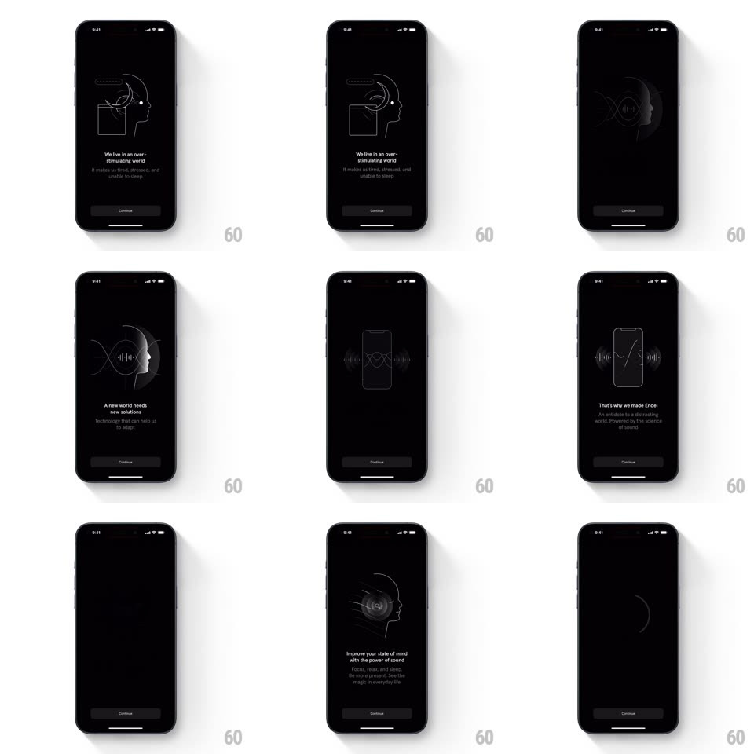

Media
Frame-by-frame

Rebuild this interaction 1:1: Endel's onboarding story - a sequence of black screens where thin white line illustrations (a head with a moon and chat bubbles, a head woven with a DNA helix, a phone flanked by waveforms, a head with orbiting ripples) animate ambiently while headline and subcopy crossfade, advanced by a Continue button.

Rebuild this interaction 1:1: Endel's onboarding story - a sequence of black screens where thin white line illustrations (a head with a moon and chat bubbles, a head woven with a DNA helix, a phone flanked by waveforms, a head with orbiting ripples) animate ambiently while headline and subcopy crossfade, advanced by a Continue button.
## Integration
Integration: stack-agnostic spec - springs given as stiffness/damping, timed motions as duration + curve; map every value to your framework and animation library of choice.
## Scene
Black screens, each: a delicate white line illustration centered-upper (head profile + crescent moon + chat bubbles / head + double-helix / phone outline with waveform lobes / head with concentric ripple arcs), a white headline ("We live in an over-stimulating world", "A new world needs new solutions", "That's why we made Endel", "Improve your state of mind with the power of sound"), gray subcopy, and a dim Continue pill pinned bottom.
## Motion spec
Pattern: ambient line-art storybook.
- Each illustration draws and then idles with slow ambient motion: the moon arcs gently around the head (12s orbit), the helix rotates (10s/rev), the waveform lobes pulse outward (1.8s breathing), the ripple arcs expand and fade cyclically (3s each, staggered).
- Screen change on Continue: the illustration's lines deconstruct (segments fade outward along their paths, 400ms) while headline and subcopy crossfade (350ms); the next illustration draws itself in (stroke reveal, 700ms, ease-in-out).
- The Continue button is constant at ~30% fill - present but whisper-quiet; it pulses once (fill to 50%) after each new screen settles.
## Calibration
- Lines are 1px white at ~85% opacity; the art should feel etched, not drawn with a marker.
- Transitions are never slides - everything dissolves through black.
## Reduced motion
Static illustrations; simple crossfades.
## Don't miss
- The illustrations keep breathing between taps - the user reads at their own pace while the art lives.
- Headline and art are semantically locked (moon = tired/stressed, helix = science) - do not swap pairings.